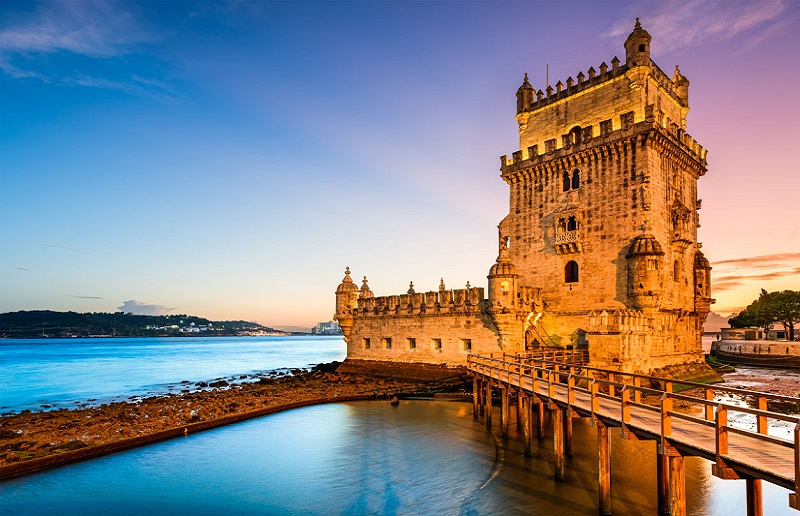

Torre de Belém, Lisboa.
A Torre de Belém, em Lisboa, é um dos monumentos mais emblemáticos e conhecidos de Portugal. Situada na margem do rio Tejo, a torre não é apenas um ícone arquitetônico, mas também um símbolo de um dos períodos mais significativos da história do país: a Era dos Descobrimentos. Sua história, arquitetura e significado cultural refletem o auge do Império Português e sua influência no mundo durante o século XVI.
História
A Torre de Belém foi construída entre 1514 e 1520, durante o reinado de Dom Manuel I, com o objetivo principal de proteger o porto de Belém e a entrada do rio Tejo contra ataques, especialmente piratas. Embora fosse uma fortificação defensiva, também desempenhou outros papéis, como farol, ponto de controle para navios e até prisão no século XIX. A Torre de Belém foi construída entre 1514 e 1520, durante o reinado de Dom Manuel I, com o objetivo principal de proteger o porto de Belém e a entrada do rio Tejo contra ataques, especialmente piratas. Embora fosse uma fortificação defensiva, também desempenhou outros papéis, como farol, ponto de controle para navios e até prisão no século XIX.
Significado Cultural
A Torre de Belém não é apenas uma fortificação histórica, mas também um símbolo do império português e de suas grandes navegações. Ela representa a glória de um período de esplendor para Portugal, quando os navegadores portugueses, como Vasco da Gama, partiram de Lisboa em busca de novas terras e rotas comerciais.
Arquitetura
A arquitetura da Torre de Belém é um exemplo marcante do estilo Manuelino, caracterizado pela mistura do gótico tardio com influências renascentistas e islâmicas. Projetada por Francisco de Arruda, a torre tem uma base quadrada e uma torre principal de planta quadrada, com cerca de 35 metros de altura. Construída em pedra calcária, apresenta detalhes ornamentais como gárgulas, rosáceas e cordas entrelaçadas.- Fachada: é decorada com esferas armilares e o escudo de Portugal, simbolizando o império marítimo. O baluarte oferece uma vista ampla do rio Tejo, e o topo da torre tem uma varanda com vista panorâmica. Durante as marés altas, a torre parecia "emergir" das águas, intensificando sua grandiosidade.
- Interior: é simples, com um sótão e salas de guarda, e no piso inferior, há uma prisão. O andar superior, com pequenas janelas, era usado como sala de vigilância e capela para abençoar os navegadores antes das expedições.